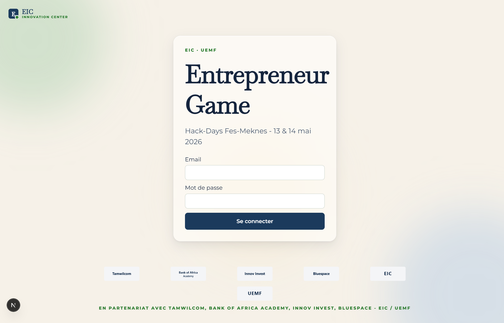
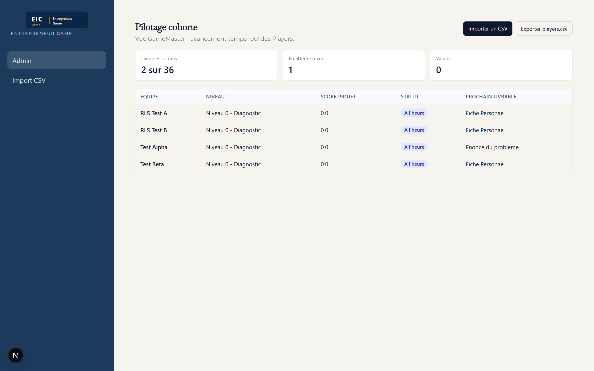
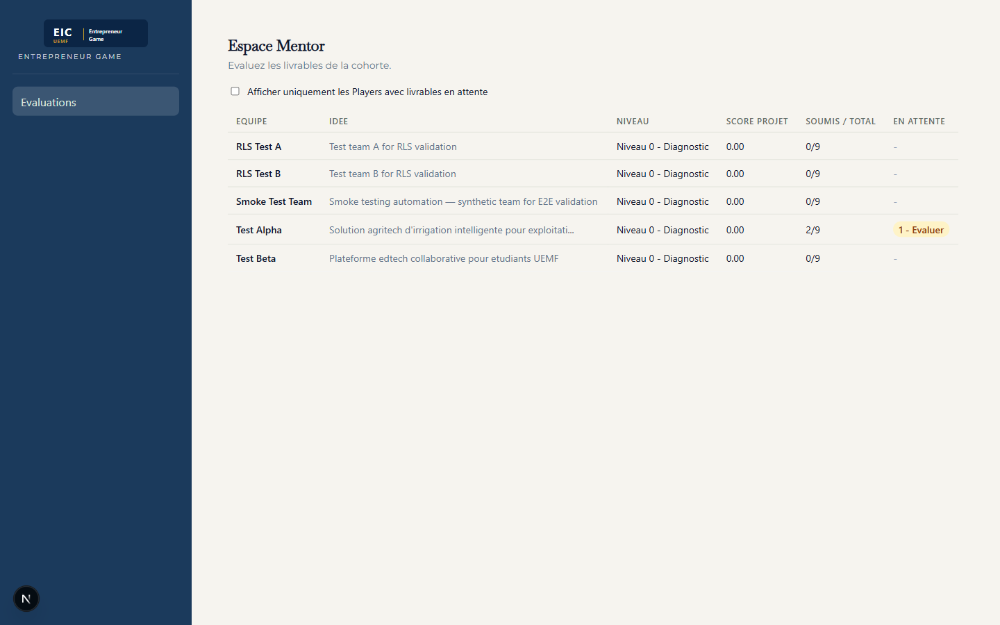
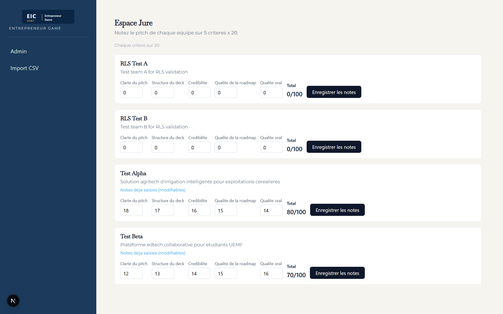

Plateforme Entrepreneur Game · GameMaster · Mentor · Jury
Manuel d'animation et fiches de poste pour les Hack-Days AgreenTech organisés par l'Euromed Innovation Center (EIC), Université Euro-Méditerranéenne de Fès (UEMF). Tout ce qu'il vous faut pour onboarder, animer, évaluer et nous remonter ce qui doit être amélioré.
Bienvenue dans le pilote AgreenTech 2026. Ce guide vous accompagne pas à pas pendant les deux jours du Hack-Days. Vos identifiants vous arrivent par email avant le 12 mai 23h.
entrepreneur-game-six.vercel.app
Quel que soit votre rôle, ces trois principes encadrent l'expérience porteur :
Les porteurs ne voient ni leur note, ni leur rang, ni les scores des autres équipes. Ils reçoivent une annonce qualitative (« validé », « à retravailler ») et un retour rédigé. Le ranking complet reste GameMaster / jury uniquement. Ne communiquez pas un score chiffré à un porteur.
Si l'app affiche un avertissement sur un livrable (champ trop court, lien manquant), c'est un signal pour le mentor — pas un blocage pour le porteur. Le porteur peut toujours soumettre. Vous, mentor / GameMaster, décidez ensuite si le livrable passe ou retourne en review.
Un porteur peut travailler sur le modèle économique même si la mission Solution n'est pas encore validée. La progression idéale reste séquentielle, mais la plateforme ne l'impose pas. Si un message conseille « à débloquer après la mission précédente », c'est une suggestion — pas une barrière.
Vous êtes le chef d'orchestre du Hack-Days. Vous voyez tout : l'avancement des 11 équipes, les soumissions, les évaluations mentors, le classement final. Vous êtes le seul rôle autorisé à voir les scores chiffrés.
En vous connectant, vous arrivez sur le cockpit cohorte. En haut : compteurs globaux (soumissions, en review, validées). Au centre : la liste des 11 porteurs avec leur statut. Sur le côté : boutons pour importer, exporter et diffuser des annonces.
Cliquez sur un porteur pour ouvrir sa fiche détaillée (missions soumises, statuts, notes mentors).
Un interrupteur en haut de la page bascule la vue en radar temps réel : chaque équipe devient un point (taille = score projet, vibration = activité récente, gris = silence depuis plus de 15 min). À garder ouvert pendant les ateliers pour repérer les équipes décrochées.

Vous suivez 4 à 6 porteurs assignés. Chaque fois qu'un de vos porteurs soumet un livrable, il atterrit dans votre file d'attente. Vous l'évaluez avec une grille de 5 critères notés sur 5 (soit 25 points au total), puis vous décidez : validé ou à retravailler.
En vous connectant, vous arrivez sur votre espace mentor. Vous y voyez la liste des soumissions de vos porteurs, triées par ancienneté. Le badge à gauche indique le statut (en attente, en cours, validée).
Cliquez sur une ligne pour ouvrir la fiche : vous voyez le livrable, vous avez accès au lien soumis (Google Doc, Figma, Notion…), et le formulaire de notation s'affiche sur le côté.
Il existe aussi une mission bonus optionnelle (typiquement un entretien terrain) que vous validez à part.

| Critère | Ce qu'on évalue | Barème |
|---|---|---|
| Clarté / argumentation | Le livrable est-il compréhensible sans contexte additionnel ? | 0 à 5 |
| Pertinence AgreenTech | L'idée est-elle cohérente avec le défi AgriTech proposé ? | 0 à 5 |
| Profondeur / preuves | Données, sources, terrain, entretiens — y a-t-il du concret ? | 0 à 5 |
| Faisabilité | Réaliste sur 12 mois compte tenu de l'équipe et des ressources ? | 0 à 5 |
| Originalité / valeur | Distinctif vs solutions existantes ? Apport pour la chaîne agro ? | 0 à 5 |
Validé — le livrable est accepté en l'état, le porteur passe à la mission suivante. · À retravailler — vos commentaires guideront le porteur. Pas de pénalité : seule la dernière version validée compte.
Vous intervenez le 14 mai après-midi pour assister aux pitchs : 4 minutes de présentation + 3 minutes de questions/réponses par équipe. Vous notez chaque équipe sur la même grille de 5 critères × 5 points (25 max) que les mentors, transposée au format pitch. Votre note pèse 80 % du classement final — c'est la décision la plus structurante.
Vous vous connectez avec les mêmes identifiants que les mentors. En arrivant sur votre espace, vous voyez la liste des équipes dans l'ordre des pitchs (annoncé en plénière J2). Cliquez sur une équipe pour ouvrir sa fiche de notation.
La grille apparaît : 5 critères, vous mettez chaque note, vous ajoutez un court commentaire libre. Validez et passez à la suivante.
Un mode plein écran existe pour la projection pendant l'animation — l'équipe à l'écran, focus visuel. Utilisez l'écran normal pour saisir vos notes.

| Critère | Ce qu'on évalue lors du pitch | Barème |
|---|---|---|
| Clarté du problème | Le problème agricole est-il bien posé, avec un client cible identifiable ? | 0 à 5 |
| Solution & différenciation | L'offre est-elle claire, et différenciée de l'existant ? | 0 à 5 |
| Marché & modèle | Taille de marché crédible, modèle économique cohérent ? | 0 à 5 |
| Équipe & exécution | L'équipe a-t-elle ce qu'il faut, le plan 12 mois tient-il debout ? | 0 à 5 |
| Pitch & impact | Qualité de la présentation orale, énergie, capacité à embarquer. | 0 à 5 |
Entrepreneur Game est une plateforme toute neuve, en version pilote. Tout fonctionne pour vous accompagner pendant ces deux jours, mais certains détails peuvent vous gêner, vous surprendre, ou même se casser. C'est attendu, et nous voulons tout savoir.
Impr.écran ou Win + Shift + S. Sur Mac : Cmd + Shift + 4. Sur mobile : combinaison habituelle de votre téléphone.omar.ameur98@gmail.com. Mentionnez votre rôle (GameMaster / Mentor / Jury), l'écran concerné, et ce que vous tentiez de faire.| Type | Exemples concrets |
|---|---|
| Bugs | Écran blanc, message d'erreur rouge, soumission qui ne part pas, bouton qui ne fait rien, score mal calculé. |
| Gênes UX | « Je ne trouve pas où cliquer pour X », « le texte est trop petit », « je m'attendais à voir Y ici », « le wording est ambigu ». |
| Suggestions | Idées d'écrans manquants, raccourcis utiles, ce qui ferait gagner du temps, ce qui rendrait l'animation plus agréable côté partenaire / porteur. |
| Doutes pédagogiques | « Cette mission est-elle bien calibrée ? », « le wording du livrable est-il compréhensible pour un porteur ? », « la rubric est-elle juste ? ». |
| Cardinal cassé | Très important : si vous voyez un score visible côté porteur (R1), un validateur qui bloque (R2), ou un blocage inter-mission codé en dur (R3), signalez tout de suite. |
| Terme | Ce que ça veut dire |
|---|---|
| Le parcours porteur | 6 missions à traverser dans l'ordre idéal : Problème → Personae → Solution → Marché → Modèle économique → Pitch final. |
| Mission bonus | Une mission optionnelle (typiquement un entretien terrain) que le mentor peut valider en plus. |
| Livrable | Le rendu concret d'une mission. Un lien partagé vers un Google Doc, une page Figma ou Notion. |
| Soumission | Quand un porteur envoie son livrable au mentor pour évaluation. |
| Grille 5×5 | 5 critères notés sur 5 points chacun, soit 25 points max par évaluation. |
| Classement pondéré | 20 % moyenne des notes mentors (livrables) + 80 % moyenne des notes jury (pitch). |
| Mode live | La vue radar du GameMaster, en temps réel : taille du point = score, gris = équipe silencieuse. |
| Annonce qualitative | Un message envoyé aux porteurs sans aucun score chiffré (rappel : règle R1). |
Omar Ameur — owner plateforme & animation Hack-Days
omar.ameur98@gmail.com
WhatsApp : à demander lors de l'onboarding.
Toute remontée beta passe par ce contact.
Guide rédigé pour le pilote AgreenTech 2026 (Hack-Days 13-14 mai) par l'Euromed Innovation Center (EIC), Université Euro-Méditerranéenne de Fès (UEMF).
Plateforme Entrepreneur Game · version pilote · classement 20/80 · 6 missions + bonus optionnel · grille 5×5 = 25 points.
Ce document évolue avec la plateforme. Version PDF générée le 11 mai 2026.